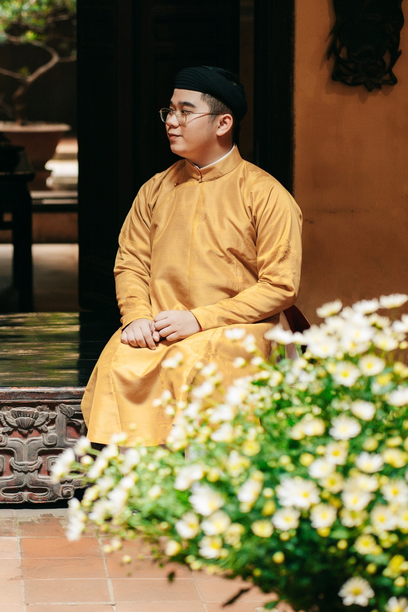
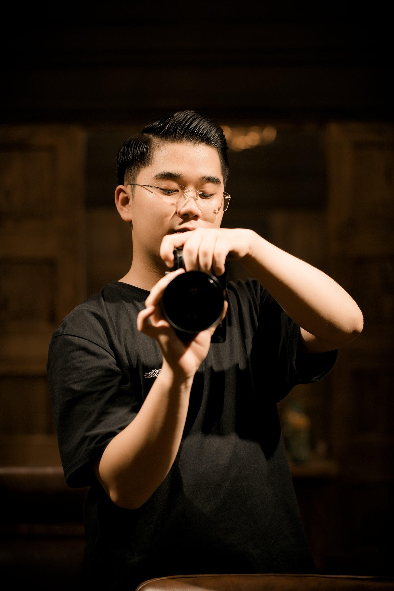
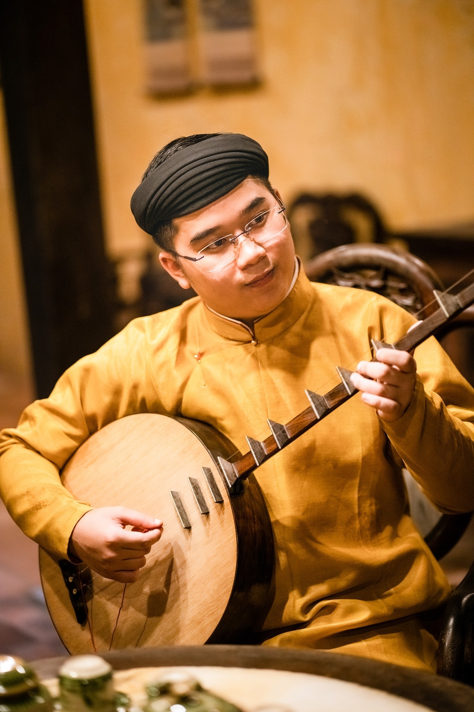

Việt Phủ Thành Chương
Huyện Sóc Sơn, TP Hà Nội
Một lập trình viên yêu văn hóa
Xin chào, tôi là Nguyễn Văn Hiếu, 19 tuổi. Tôi hiện đang là sinh viên chuyên ngành "Kỹ thuật phần mềm", trường Đại Học FPT Hà Nội. Tại sao tôi lại nói rằng tôi là "Một lập trình viên yêu văn hóa"? Lập trình là chuyên ngành mà tôi đã theo đuổi ngay từ khi tôi mới là một cậu học sinh lớp 8, đến nay cũng đã 6 năm rồi. Nó đem lại cho tôi cảm giác thích thú khi được tư duy, làm việc với những con số và dòng lệnh. Với văn hóa, tôi tự ý thức được rằng, tôi là một người con đất Việt, có trách nhiệm gìn giữ và phát triển văn hóa truyền thống của người Việt. Ngoài việc tiếp thu những tinh hoa văn hóa thế giới, nhiệm vụ của chúng ta còn là đưa văn hóa Việt Nam ra toàn cầu. Và chính việc làm lập trình viên có thể giúp tôi làm điều đó một cách dễ dàng hơn.
DEVELOPER

CULTURE
PHOTOGRAPHER
Lập trình viên Web, App, Game
Ngoài là một sinh viên năm 2 chuyên ngành "Kỹ thuật phần mềm" tại Đại học FPT Hà Nội. Tôi còn tự mày mò và khám phá những kiến thức trên Internet về lập trình. Thuộc tuýp người giải quyết vấn đề (problem-solver) và đam mê kinh doanh trực tuyến, chính vì vậy, tôi mong muốn được học hỏi kinh nghiệm từ các dự án, doanh nghiệp để có thể phát triển toàn diện về các mảng kiến thức. Bản thân hướng tới trở thành một lập trình viên đa dạng.
WEB DEVELOPER

APP DEVELOPER
GAME DEVELOPER
Một người yêu văn hóa truyền thống
Văn hóa là nền tảng tinh thần của xã hội, là mục tiêu và động lực phát triển đất nước. Văn hóa có vai trò quan trọng trong việc hình thành nhân cách con người và bản sắc, cốt cách dân tộc. Ngày nay, văn hóa còn được xác định là một trong những yếu tố có vai trò quyết định sức mạnh và vị thế của mỗi quốc gia, dân tộc trên trường quốc tế. Vì thế, xây dựng văn hóa Việt Nam trước yêu cầu phát triển bền vững đất nước là một trong những nhiệm vụ quan trọng hàng đầu của cách mạng Việt Nam hiện nay.
ÁO NGŨ THÂN

ÂM NHẠC TRUYỀN THỐNG
DI TÍCH LỊCH SỬ

Niềm đam mê nhiếp ảnh. Hướng đến chân – thiện – mỹ
Nhiếp ảnh là nghệ thuật, và nghệ thuật luôn hướng tôi tới cái gọi là chân – thiện – mỹ. Tôi chụp ảnh, và đam mê nó, vì nó xuất phát từ chính niềm yêu thích của tôi. Tôi ham học hỏi và tôi muốn giao lưu với những người đi trước mình, tôi học bằng sự chân thành của chính mình. Tất nhiên, hạnh phúc chỉ đến khi con người cho đi và nhận lại. Tôi học hỏi người đi trước và cũng chia sẻ với những người đi sau mình, đó chính là ‘chân’. Thông qua nhiếp ảnh, tôi cũng được tiếp xúc với muôn màu cuộc sống. Đi nhiều nơi, ghi nhận những mảng màu sáng tối của cuộc sống, tôi biết cảm thông với những số phận cơ cực, thiếu may mắn. Điều đó càng thôi thúc tôi hướng tới cái ”thiện’, giúp đỡ mọi người. Những bức ảnh sẽ công cụ truyền tải nhiều thông điệp ý nghĩa hiệu quả nhất, giúp mọi người hiểu hơn về cuộc sống xung quanh mình. Theo đạo Phật, con người có chân thật, có thiện mà không có thẫm mỹ thì cuộc sống khô khan chưa được gọi là toàn bích. Cố gắng tạo ra những bức ảnh đẹp, từ những cảm xúc chân thật, những khoảnh khắc đẹp của tự nhiên, nghĩa là tôi hướng tới cái đẹp, nâng cao thẩm mỹ của chính mình và hoàn thiện bản thân.
CHÂN DUNG

PHONG CẢNH

TĨNH VẬT

Liên hệ với mình nhé!
Khu Giáo dục và Đào tạo – Khu Công nghệ cao Hòa Lạc – Km29 Đại lộ Thăng Long, H. Thạch Thất, TP. Hà Nội
+84988561896
hieunvhe163104@fpt.edu.vn